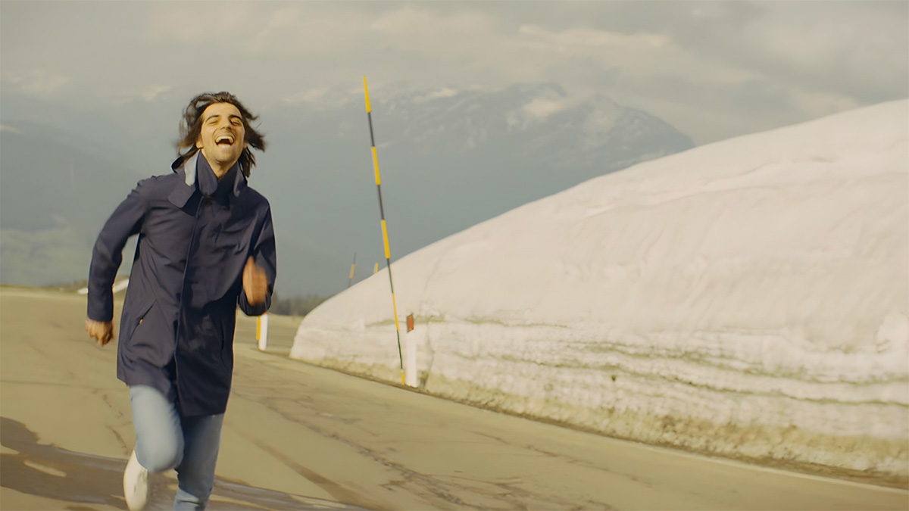
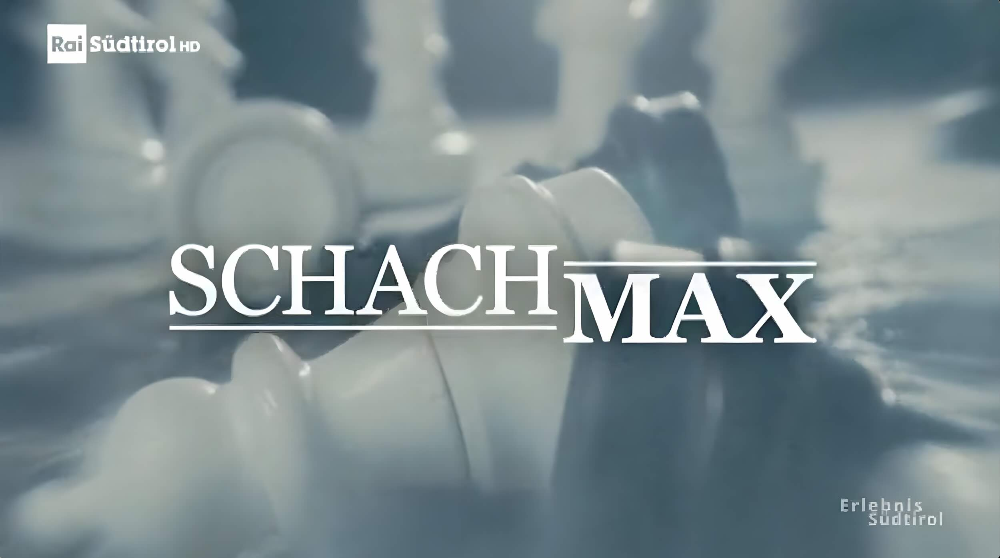
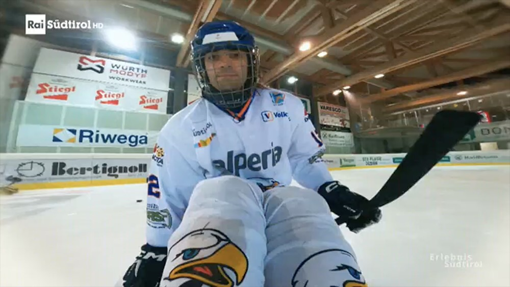
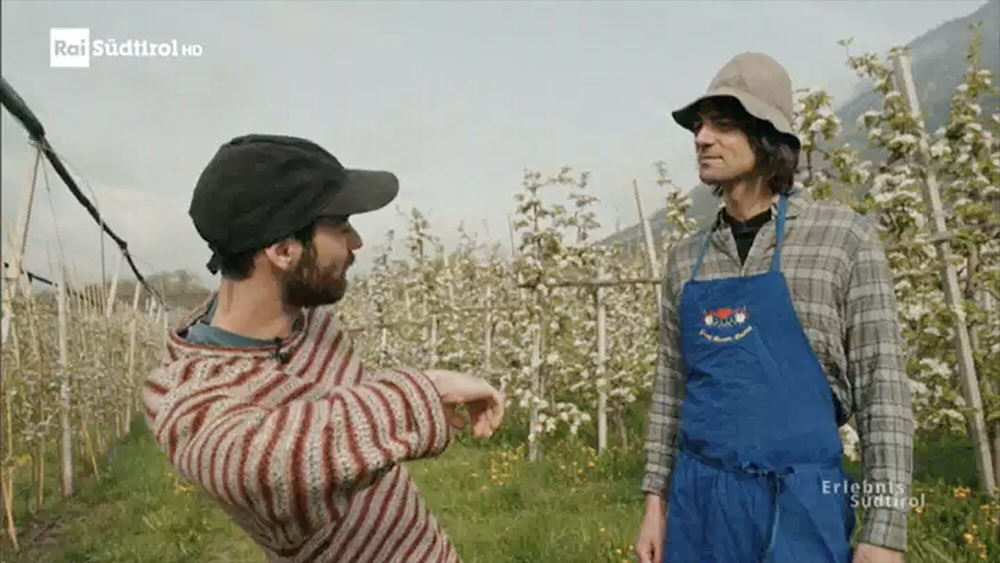
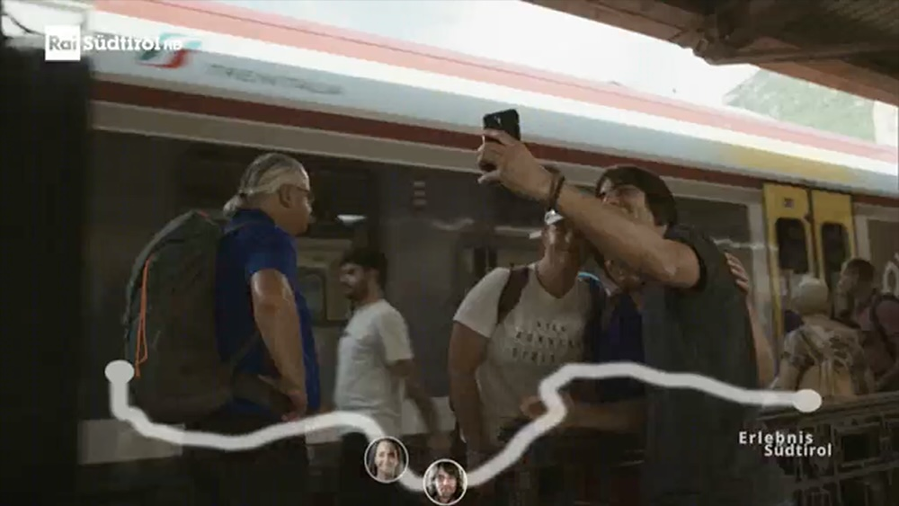
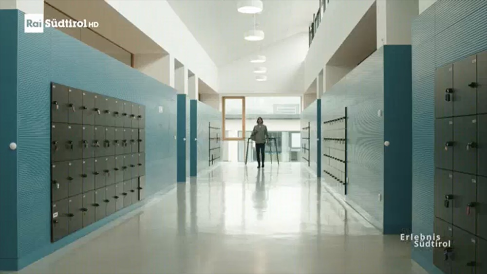
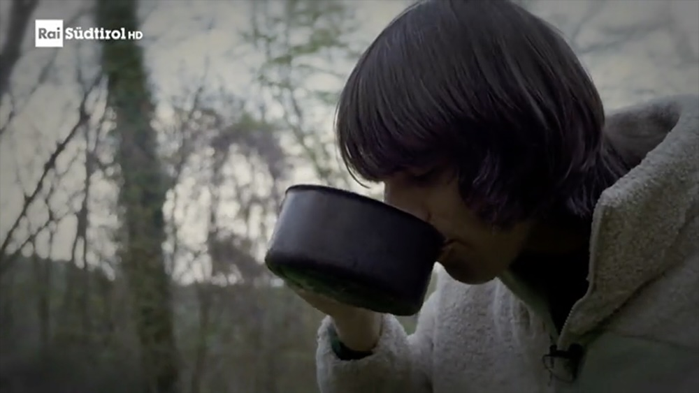
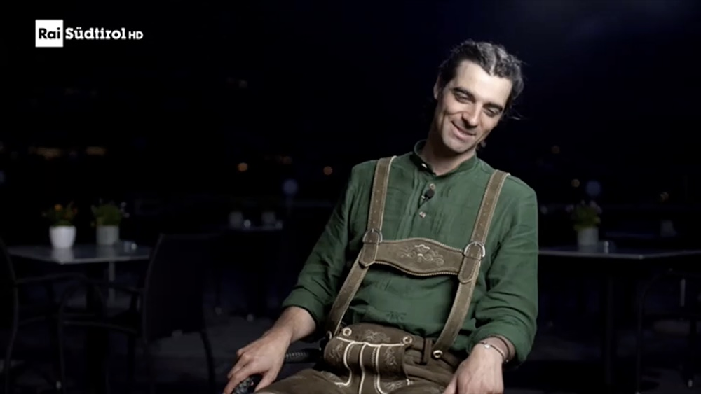
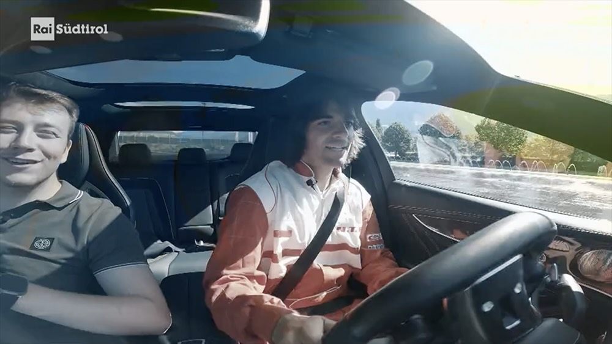
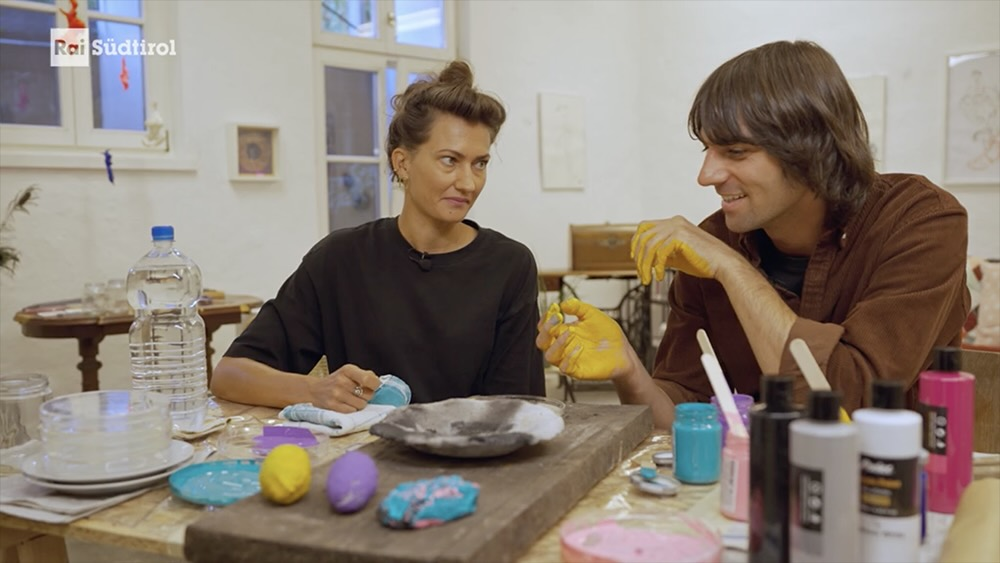

Max von Milland
Die Story
Südtirol ist bekannt für Berge, Skifahren und tolles Essen. Aber Südtirol ist so viel mehr.
Das zeigt der Südtiroler Musiker Max von Milland in seiner Show „SchachMax“, die ich für ihn und RAI Südtirol konzipiert habe. Darin stellt er sich spannenden Challenges, die Südtirol mal von einer anderen Seite zeigen.

Das Konzept
„SchachMax“ fragt in jeder Folge: Schafft Max das, was andere Südtiroler:innen jeden Tag an Besonderem leisten? Eine Challenge zwischen Para-Eishockey, Matura und Survival in den Bergen.
Der Start
Max spielt Para-Eishockey, schreibt die Matura, wird Comedian und raced mit den Öffis zum westlichsten Ort Südtirols.




Insight
In der ersten Staffel ist die Sendung Teil des bestehenden Formats „Erlebnis Südtirol“.
Die Eigenständigkeit
Max übernachtet im Wald, wird zum Rennfahrer, Schuhplattler und sogar zum Bildenden Künstler.




Insight
Die Sendung kriegt ihren eigenen Sendeplatz - und eine dritte Staffel ist schon abgedreht.
Egal ob dieser spezielle Case, eine konkrete Idee oder eine aktuelle Herausforderung — ich freue mich über den persönlichen Austausch.
MAIL ME.